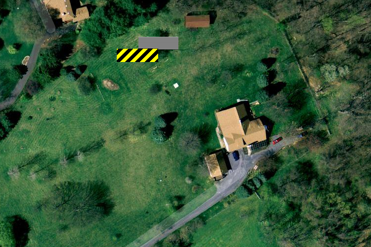

|
Home About VSI What We Do Who We Are Contact Info Resources Blog Data Archives Export |
Photo-voltaic Power Generation SystemDesign ConsiderationsTotal capacityEstimating the "net zero" target for annual power production turned out to be challenging due to a number of factors. Since overproduction of power is undesirable a figure at the low end of the range of plausible values was chosen (18,000 KWh/year).Battery backup capacityBatteries are expensive and have a limited lifespan, so we wanted only enough battery capacity to meet the design goal powering the critical loads panel overnight (eight hours). Assuming a 700W overnight load and a maximum 50% battery discharge that worked out to about a nominal 11KWh battery bank capacity.Conventional flooded lead-acid batteries have the best combination of performance and value, and were carefully considered, but AGM batteries were ultimately chosen for the peace of mind of some of the occupants. Hybrid inverters capable of maintaining the battery bank and powering the critical loads panel are only available in specific discrete sizes, with about 6KW being the maximum for a single 120/240V inverter. Higher wattages require "stacking" multiple inverters (wiring and configuring them to provide in-phase power in parallel). Stacking two inverters more than doubles the cost, of course, so we elected to use a single 6KW inverter (Xantrex XW 6068). Stacked SMA "Sunny Island" inverters would have been technically optimal, but were cost-prohibitive. Two relative disadvantages of the Xantrex are less capable frequency drooping and the need for a different proprietary remote management panel, one that unfortunately isn't TCP/IP based and so can only be physically accessed. PV Panel MountingThe main building has a large roof area, but is oriented in the wrong direction with the main ridgeline running north-south and the largest clear roof area facing almost due west. A large chimney and dormer substantially shade the south facing roof area, as do several large trees to the south. So, that left us with ground mounting as the best option.Although the property is nearly 10 acres (4 hectares) in size, more than half is heavily wooded. The remaining portion also has a number of trees. Careful study and hours spent walking around with a borrowed "Solar Pathfinder(tm)" showed that only one location was feasible, and even then some trees will need to be cut down:  In this picture north is straight up and the two colored rectangles represent the footprint of the ground mount structure for two options. The horizontally striped black-and-white rectangle represents the initial preferred location, but that has the disadvantage of stradling multiple buried power and phone lines and has a significant change in elevation (over eight feet from opposite corners of the rectangular footprint). By shifting the structure to the west and south (rectangle with black and yellow stripes) we avoid the buried lined and reduce the elevation change. Moving even farther to the west (left) would have been even more favorable terrain but we didn't want to unnecessarily block the southern view of our neighbors to the north.
Ground mounting of a large area of panels requires a substantial foundation. When initially reviewing
commercial offerings a DIY approach was considered, and a local mechanical engineer was consulted. As
that PE explained, the large area of panels constitutes a giant sail that by code
has to withstand an enormous uplift force from strong winds (roughly 30,000 pounds). The usual way
of accomplishing that is with massive concrete footings. The panels we ultimately selected,
SolarWorld
Sunmodule
SW 250 watt panels, are 66" by 38" and weight 47 lbs each. There will be 60 panels total, or
1045 square feet and 2,800 lbs. The foundation will consist of 24" diameter concrete piers (exact
number unknown at this time, but probably 8) and so many yards of concrete will be required.
|
|
|